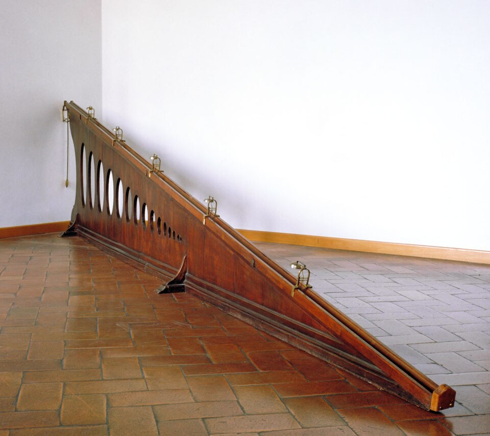

- A falling body was too fast to time. So Galileo slowed it down: a bronze ball rolling down a gentle slope
- His clock: he weighed the water that ran from a tank during each run
- Twice the time: four times the distance
- 1638: published in his last book, Two New Sciences
Uniform acceleration, found by measuring.